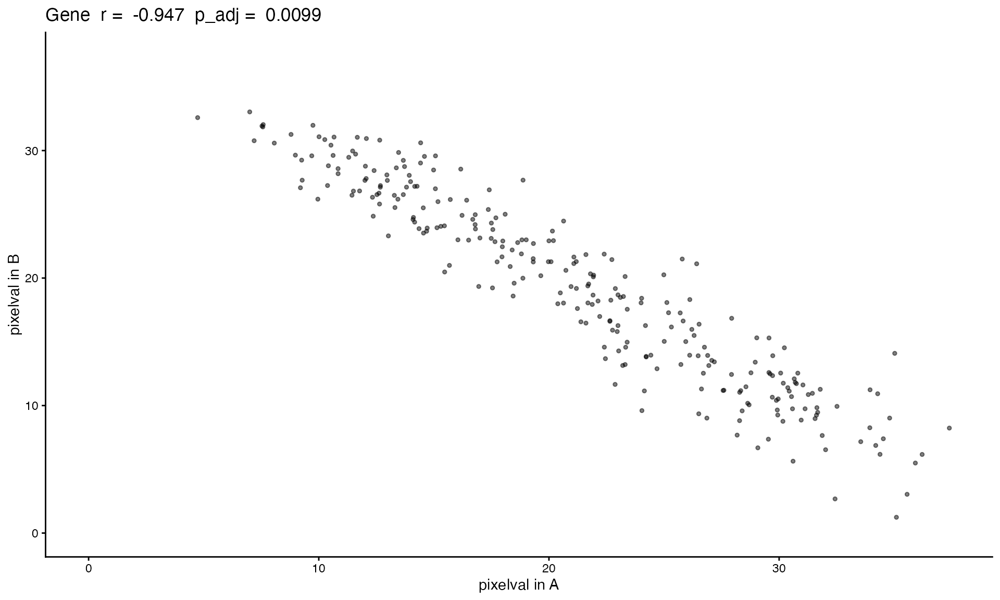
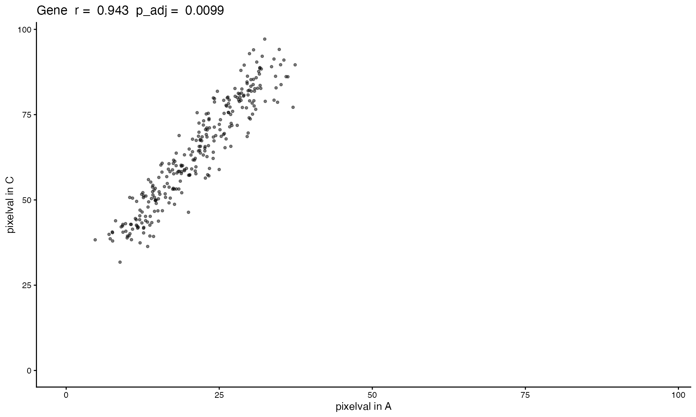

Plot a gene's values in two samples at the shared pixels
Source:R/spatialCorrelation.R
plotCorrelationGeneExp.RdScatter plot of a gene's values in two SpatialExperiment objects on their shared pixels, with the correlation coefficient and the permutation p-value of the gene in the title.
Arguments
- speList
listList of two SpatialExperiment objects with matched spatial locations. The first element corresponds to the first SpatialExperiment (X), and the second to the second SpatialExperiment (Y). The names of the list label the axes.- spatialCorrelation
dataframe: the output ofspatialCorrelationGeneExp()orspatialCorrelationGeneExpIterPermutations()forspeList, or ofcompareSpatial()for the same objects.- geneName
character: The name of the gene (row) in both SpatialExperiment objects ofspeListand inspatialCorrelation.- assayName
characterorintegerA character string or numeric specifying the assay in the SpatialExperiment to use. Default isNULL. If no value is supplied forassayName, then the first assay is used as a default
Value
A ggplot object: a scatterplot with the values of the gene in the
first SpatialExperiment, i.e
SummarizedExperiment::assay(speList[[1]], assayName)[geneName, ],
on the x-axis and values of the gene in the second SpatialExperiment on
the y-axis. The title includes the gene name, the correlation coefficient
(rounded to 3 decimals), and a permutation p-value (3 significant digits):
p_adj, the adjusted permutation p-value pValuePermuteAdj,
for a compareSpatial() result (recognised by that column);
p_adj, the greater of the two adjusted p-values
pValuePermuteXAdj and pValuePermuteYAdj (NA if
either is NA), for the output of
spatialCorrelationGeneExp() or
spatialCorrelationGeneExpIterPermutations(); or
p_E, the greater of the unadjusted pValuePermuteX and
pValuePermuteY, for a table without adjusted columns. A table
saved by spatialCorrelationGeneExpIterPermutations() before
version 2.0.0 has no adjusted columns, although its pValuePermuteX
and pValuePermuteY were adjusted, so it is shown with the
p_E label; recompute it to have the p-value labelled
p_adj.
Details
The pixels are matched by name, as in
spatialCorrelationGeneExp(). Both axes start at 0, or at the
smallest value if a value is negative, and end at the largest value, so
every pixel with values in both objects is drawn.
See also
plotGene(), the standardized figure of a gene in a
compareSpatial() result, whose scatter plot is labelled with
every p-value of the gene.
Examples
data(speKidney)
##### Rasterize to get pixels at matched spatial locations #####
rastKidney <- SEraster::rasterizeGeneExpression(speKidney,
assay_name = 'counts', resolution = 0.2, fun = "mean",
square = FALSE)
##### Use STcompare to calculate Pearson's correlation coefficient #####
rastGexpListAB <- list(A = rastKidney$A, B = rastKidney$B)
rastGexpListAC <- list(A = rastKidney$A, C = rastKidney$C)
negCorrelation <- spatialCorrelationGeneExp(rastGexpListAB, nThreads = 2)
#> spatialCorrelationGeneExp: 1 gene(s) x 2 directions on 273 shared pixels, 100 permutations, 2 thread(s)
#> spatialCorrelationGeneExp: done in 0.0 s (0 of 1 gene(s) with NA permutation p-values)
posCorrelation <- spatialCorrelationGeneExp(rastGexpListAC, nThreads = 2)
#> spatialCorrelationGeneExp: 1 gene(s) x 2 directions on 277 shared pixels, 100 permutations, 2 thread(s)
#> spatialCorrelationGeneExp: done in 0.0 s (0 of 1 gene(s) with NA permutation p-values)
negCorrelation
#> correlationCoef pValueNaive pValuePermuteX pValuePermuteY
#> Gene -0.9472813 5.652003e-136 0.00990099 0.00990099
#> pValuePermuteXAdj pValuePermuteYAdj deltaStarMedianX deltaStarMedianY
#> Gene 0.00990099 0.00990099 0.2 0.2
#> deltaStarX deltaStarY nullCorrelationsX nullCorrelationsY
#> Gene 0.2, 0.2.... 0.2, 0.2.... -0.16074.... -0.08458....
posCorrelation
#> correlationCoef pValueNaive pValuePermuteX pValuePermuteY
#> Gene 0.9431531 1.409195e-133 0.00990099 0.00990099
#> pValuePermuteXAdj pValuePermuteYAdj deltaStarMedianX deltaStarMedianY
#> Gene 0.00990099 0.00990099 0.2 0.2
#> deltaStarX deltaStarY nullCorrelationsX nullCorrelationsY
#> Gene 0.2, 0.4.... 0.2, 0.2.... -0.00632.... 0.052321....
expAB <- plotCorrelationGeneExp(rastGexpListAB, negCorrelation, "Gene")
expAC <- plotCorrelationGeneExp(rastGexpListAC, posCorrelation, "Gene")
expAB

expAC
